A scientist wore a mask to catch seven crows
A scientist wore this mask to catch seven crows.
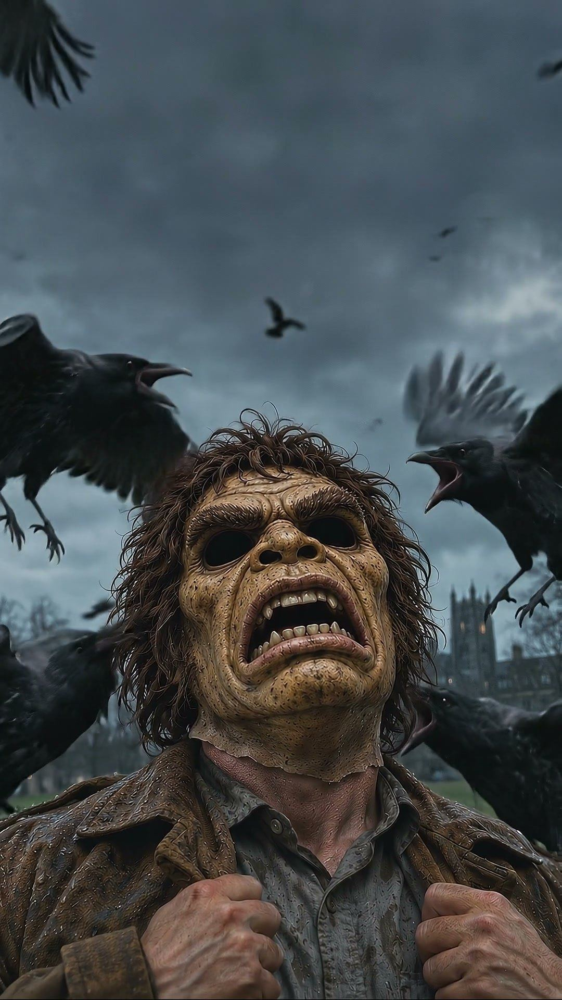
For seventeen years, crows warned each other about it.
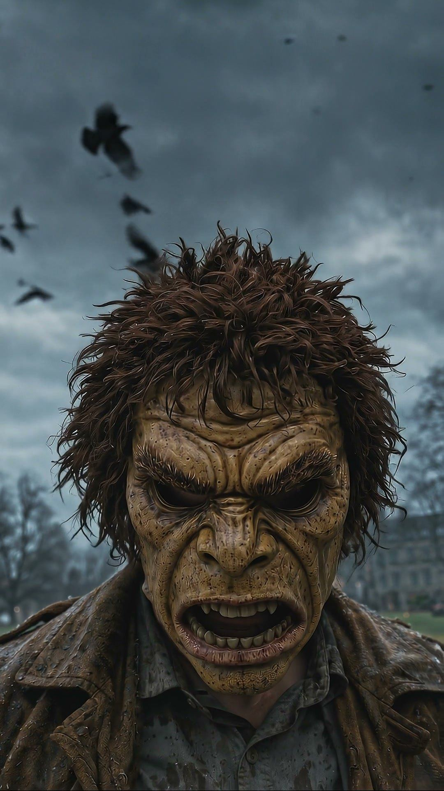
He caught them in a net.
He didn’t hurt them.
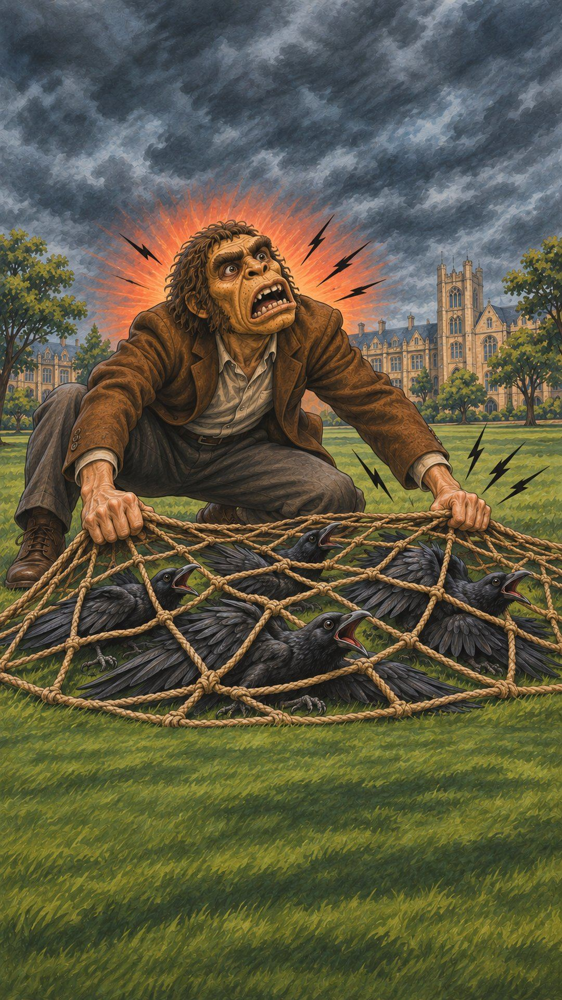
He let them all go.
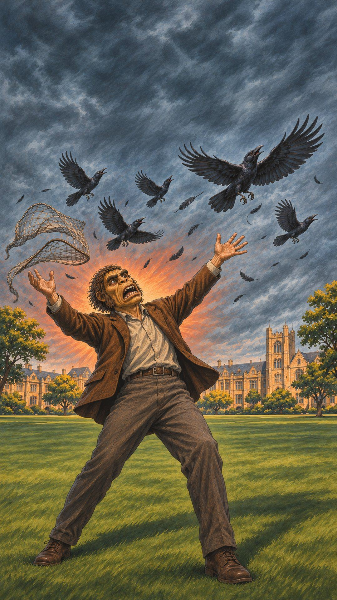
Then he walked across campus in the same mask.
Crows followed him, screaming.
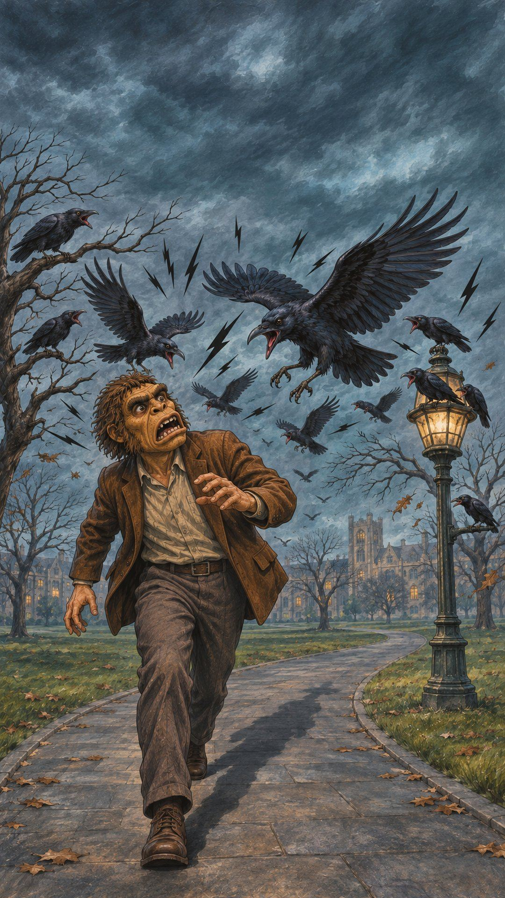
He tried a different mask.
Nothing.
They knew that one face.
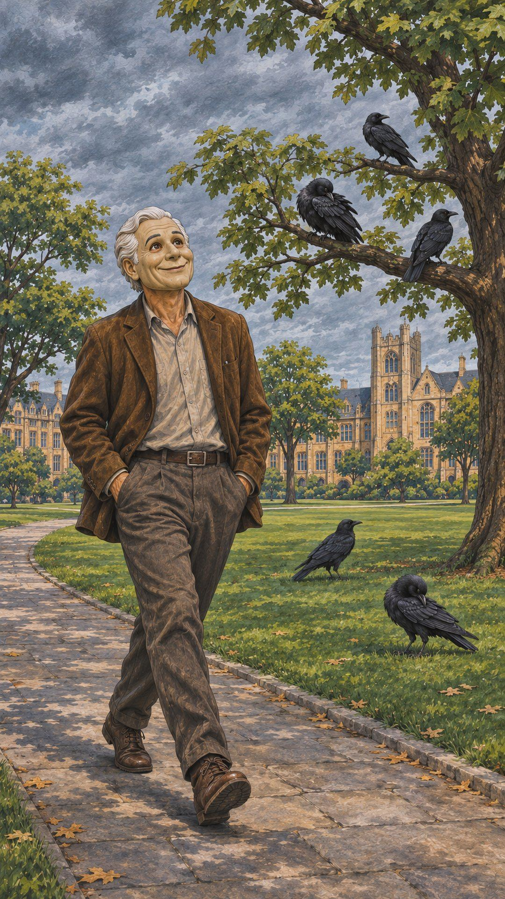
These are real crows.
They remember a face.
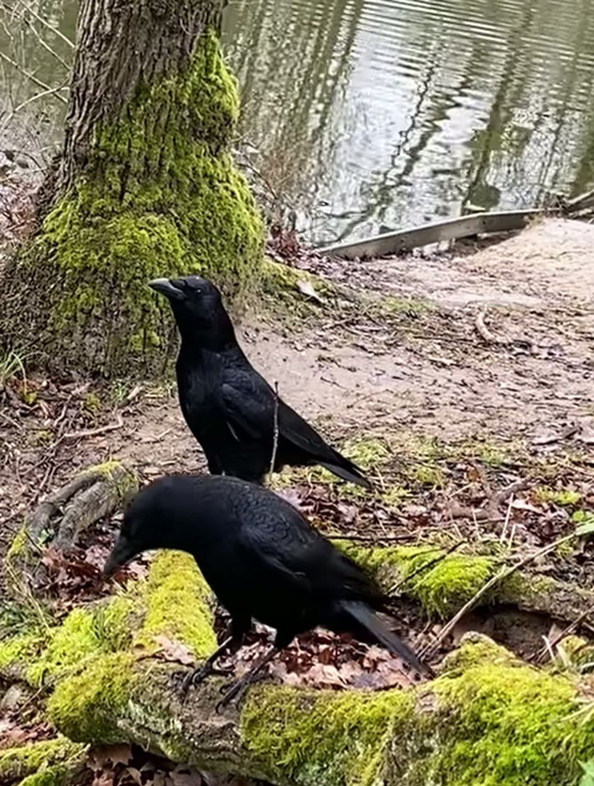
But here’s the strange part.
Crows he never caught started screaming too.
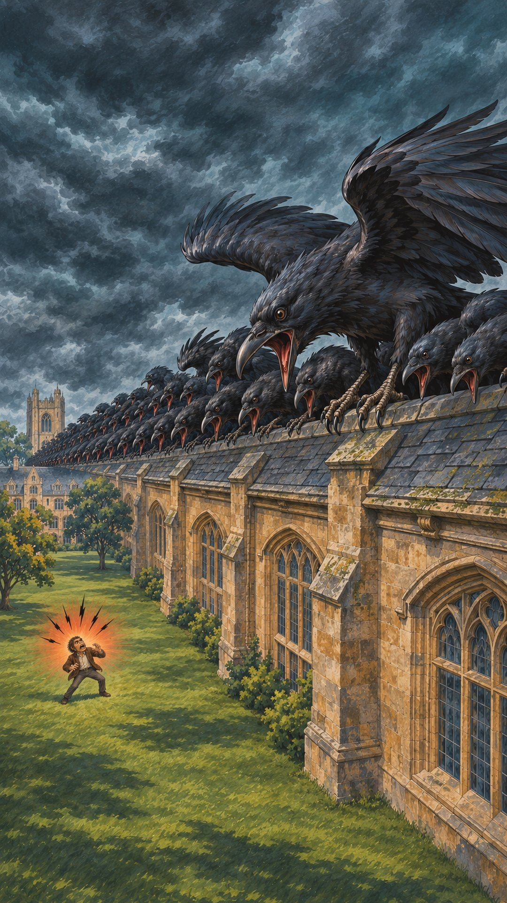
Baby crows, born after that day.
They had never seen him.
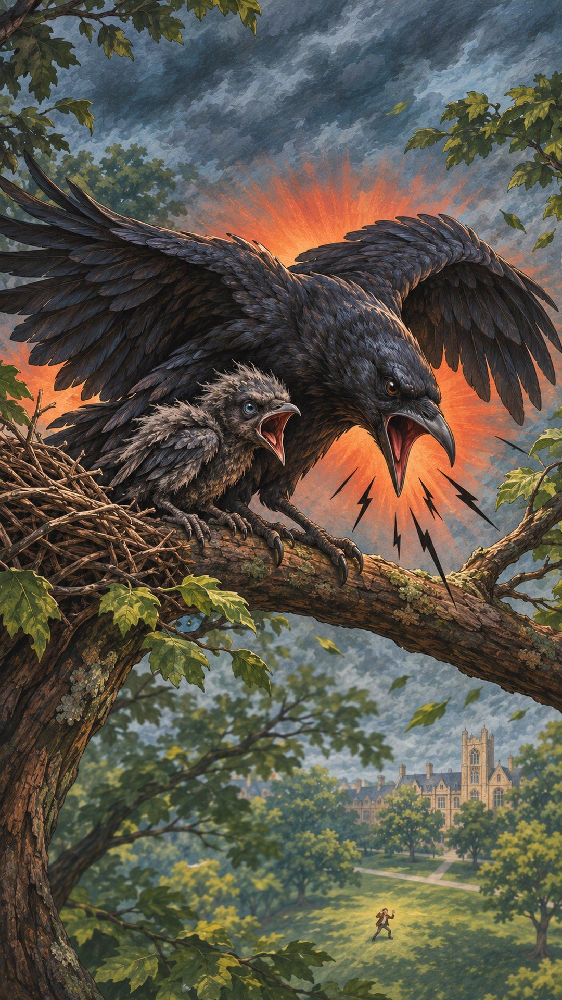
Their parents taught them: this face is dangerous.
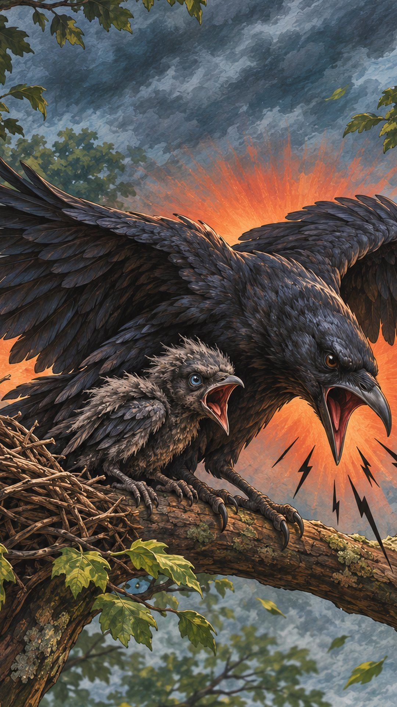
Seven years later, about half the crows he met still screamed at that mask.
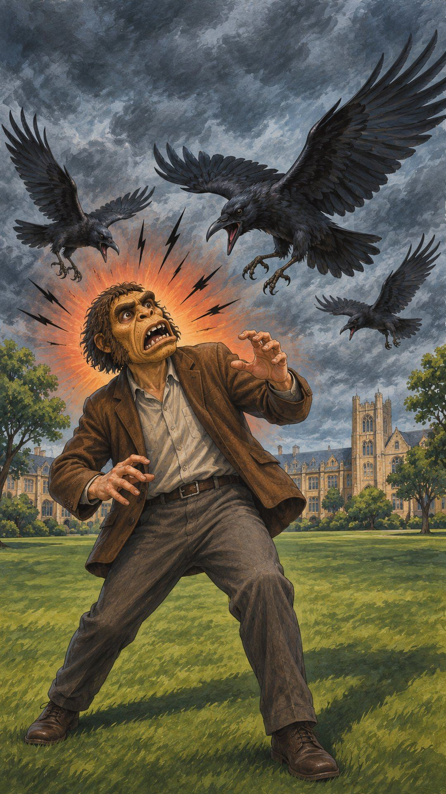
Seventeen years later, he walked the same path.
Sixteen crows.
Not one screamed.
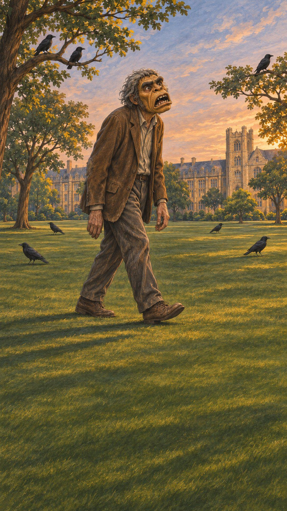
What are you afraid of, just because your parents were?
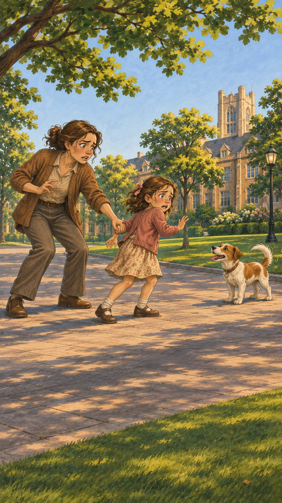
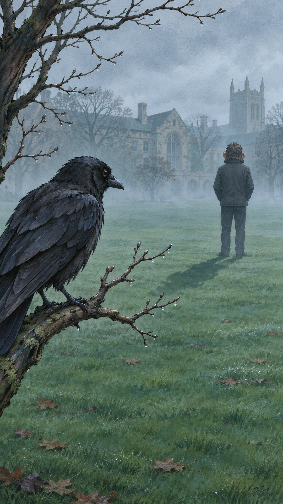
A fable based on real research: Cornell, Marzluff & Pecoraro, Proc R Soc B, 2012; The New York Times, 2024. The opening frames are from an AI-made video and the painted scenes are fictional; the real crows mostly screamed at and followed the mask. Real crows shown are carrion crows in Paris, not from the study: Wikimedia Commons (CC0).